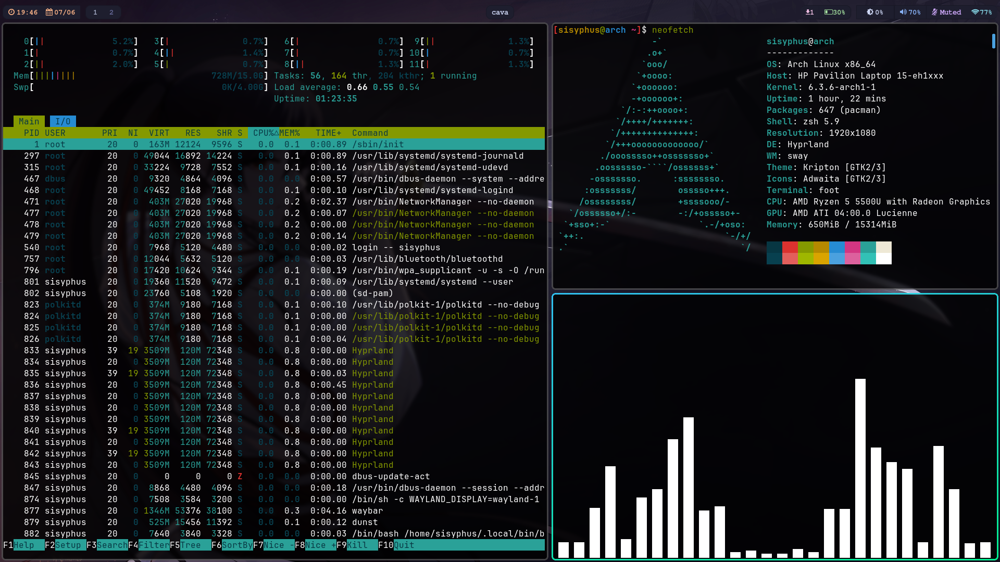

Software Recommendation
669 words · 4 min readThis is a list of all (almost) the software i use on my pc as well as on my phone.
My Setup


PC
-
Operating System: I use Arch Linux beacuse of its simplicity and KISS ( keep it simple, stupid!) philosophy. Arch linux has a rolling release model. It also has a large and active community, which means there is a lot of support available if you need it. -
Terminal: Foot: I use this tiny program called foot as my terminal emulator. Its pretty cool. (I like feet.) -
Shell: I use zsh as my default shell. It supports a lot of plugins and has auto tab completion and syntax highlighting too. You can try my zsh configurations here -
Text Editor: Neovim, which is terminal based vim like text editor with a little more features and plugins. Like vim, it doesn’t require mouse and is completely keyboard centric. -
Window Manager/compositor: I am using Hyprland which is a dynamic tiling Wayland compositor based on wlroots. It is easy to customize and rice. I have already written a blog on how to rice hyprland like mine. -
Media Player: For media (music/videos) consumption, i use mpv which is a Lightweight, opensource and is highly customoizable and can be extended with scripts and plugins. -
Web Browser: I keep switching browsers every once in a while because they all suck. The one that I am using as of now is called librewolf. It is lghtweight, opensource and is highly customizable and can be extended with scripts and plugins. I use uBlock Origin to block ads and trackers. -
File Manager: I use a terminal based file manager called lf which is just like ranger but its written in go so its a lot faster.It also has a lot of great features like tabs, previewing of files and integration with other cli tools. I also use thunar sometimes. -
Synchronization: Syncthing; Useful for synching files over the same network. -
Office Suite: Libre Office: I mean do i even have any other choice here? -
Consoom: Jellyfin is a media server and suite of multimedia applications designed to organize, manage, and share digital media files to networked devices. I consoom movies and shows using jellyfin sometimes. -
Status Bar: I am using waybar-hyprland which is a fork of waybar. It’s pretty simple to use and configure. -
Pdf Reader: zathura has vim keybindings. What else can one ask for? -
Password Manager: KeePassXC is an offline password manager. I wrote a blog about how i sync my passwords across multiple devices
Phone
-
Operation System: I use a custom rom called Lineage OS with gapps. -
File Manager: Simple File Manager Pro; goofy ahh name, but it’s opensource and gets the job done. -
Web Browser: I use Bromite which is a chromium fork with ad blocking and enhanced provacy. -
App Store: I have play store since you cant remove it if you use google services, but i use fdroid whenever possible. -
Email: I use K9 Mail on my phone for emails. -
Cloud Storeage: MEGA, It’s licence is unclear but i think client source is open-source. -
Epub Reader: I like to read books on my phone and for that i use Google Play Books (Proprietary again). I use it with wifi and mobile data permissions disabled. -
Pdf Reader: For PDFs, i use MuPDF. It’s Lightweight, has encryption, hyperlinks, annonations, seearhing, form editing features. -
Youtube Client: Revanced and Newpipe are FOSS opensource front ends of Youtube with premium features. Revanced uses microg, which is a free re-implementation of Google’s proprietary android user space apps and libraries. -
Consoom: I use Jellyfin on my phone too. -
Others: All the other apps (Calculator, Gallery, Dialer, Contacts, Recorder etc) are the default ones that come pre-installed with Lineage OS. All are open-source ofc.
I use some proprietary software on my phone that i can’t live without. These are separeted out beacuse i do not recommend such:
telegram
whatsapp
gpay
google play books
google maps
Note: You can check the list of all the software i use with hyprland in this script.